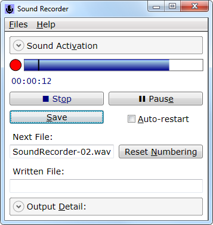
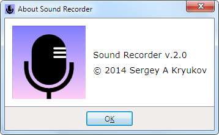

 
Table of Contents
1 Sentiments
Software developers are often blamed for lack of understanding of the application field and narrow "programming" point of view. Is it fair? Well, sometime it reflects the ignorance of the people blaming software developers, but in some cases, this is a holy truth. All narrow specialists are limited. It is easier to find a good software development utility than anything domain-oriented in a narrow field of application. Some say, the best software is the software developed for one's own consumption. I think that's true.
Take those sound recorders, nearly all of off them. I don't mean those which come as a part of some sophisticated sound editors. They can do really serious job: visualization, all kinds of on-the-fly filtering, and a lot more. I mean something simple, like most of those recorders, like the one which comes with Windows. If you try to use it for any practical purpose, you will see that the author never tried to record anything for some real purpose different from testing of this piece of software.
A person who would immediately see that the tool is unusable could be, say, a musician trying to record those rehearsals to hear how it sounds and fix the problems. A person who wants to record a brainstorm on the meeting will also see the problem, but let's come back to a musician.
A musician holds a saxophone with both hands. A violin… A guitar… This person doesn't want to reach for the computer and do too much to get each record. This person wants to play the piece once again, because the previous one was almost perfect, but the string slightly slipped off the finger, so that signature brilliant bend was not so pronounced and touching as planned. So the piece should be repeated again. And again…
The need for sound activation is pretty obvious and well recognized, but this is not about just the sound activation. Clicking on the mouse… Operating file browser dialog and typing the file name for the next record in who-knows-which directory. Clicking all those "record", "stop" and "save" over and over. Come on.
Let's see if it can be done in some practically convenient way, from the standpoint of a person recoding a lot of samples, not from the standpoint of the developer of the tool.
2 Operation
Actually, there is nothing sophisticated or difficult. This is just a matter of some common sense. It is actually very simple. First and foremost, with some appropriate set of options, the record can be stopped and saved in just one hit, one the wide and easy-to-reach blank-space key. It will (again, optionally) restart the recording and save the previous one. Hence, the file names are never typed. They are created based on some preliminary defined base file name, with sequential numbers, but the way preventing overwriting of any previously written files.
And then, what’s up with optional sound activation? It is determined by a threshold positioned on the sound volume indicator control. It is done visually. When the sound volume goes beyond the vertical bar (which is set to positive infinite value and not visible at startup, but can be moved onto the volume indicator), the recoding is activated. The state is shown by the blinking indicator, a digital watch showing "pure" (without pauses) elapsed time, as well as the IsEnabled states of the buttons.
In a nutshell, that's all. The operation is described on the help screen of the application; only the delicate detail, as basic operation is self-explanatory. The pictures on the top show the "About" box and least expanded view of the main window, which holds all the controls in one place. This is how it looks with two when both Expander controls are expanded:

Those two Expander controls show the options which are not changed often and not needed to be shown during repetitive recordings. Note that the sound activation threshold is kept handy, because adjusting it several times could be needed.
The important sound activation option under the top expander shows important parameter: the delay between detecting of the activating sound and activation of recording. This is needed to cut out the sound used for activation from the record. This technique works fairly well, and the default value of 200 ms works reasonably well, at least for the first approximation.
The question is: why not sound deactivation, deactivation be a period of silence? I was skeptical about it, but still tried. No, it would be utterly impractical, would cause frustrating false positives all the time. Another excuse for not doing it would be this: it's easier and faster to cut out unwanted piece of record from the end.<</p>
How about voice recognition for activation and deactivation? Would be quite possible; I tried it (not on this application). It can be a matter of taste, but I think it would also be impractical: even very few false positives and false negatives will greatly irritate. Perhaps it could do better for recoding of meetings. Anyone is welcome to try it.
To me, convenience is, first of all, minimalism. Nothing should distract from the main thing. How about different file types: MP3, AAC, WMA, and so on? No. If you really want to do good recording, you are not trusting embedded encoders. Who knows what they do? You will want WAV and compress them the way you want, only some selected files. Again, feature set is the matter of discussion, but I have pretty strict priorities. Of course, any kind of criticism and advice will be quite welcome, as always.
I also wanted to discuss a bit the persistence of the preferences. They can be saved in a file, this is clear. Predefined area per user in "Users" directory? No. I find it important to create, if possible, the applications which leave minimal to no trace on the target system and don't require installation. The user saves the file in a directory of one's choice and the preferences can be loaded later. Importantly, the base file can have the directory ".\", which means that the files can be saved to any current directory, whatever it is.
Can the preferences be loaded automatically? Sure. It happens in the following priority:
- If the preference file name is given in the command line and exists, this file is loaded. It is convenient to make batch files to start the application with different preferences.
- Otherwise, if the file with the "Default" name is found in the working directory before starting of the application, it will be loaded.
- Otherwise, if the file with the "Default" name is found in the executable directory of the application, it is loaded.
These rules provide maximum flexibility.
3 Key Implementation Detail
Due to the simplicity of the tool, implementation is quite trivial. Here is the core implementation of the recording, based on "winmm.dll" and P/Invoke:
using System;
using System.Text;
using System.Runtime.InteropServices;
using System.Threading;
internal static class Mci {
static class DefinitionSet {
internal const string DllName = "winmm.dll";
internal const string LevelMeterDeviceId = "soundLevelMeterDevice";
internal const string SoundRecordDeviceId = "soundRecordDevice";
internal const string OpenCommandFormat =
"open new type waveaudio alias {0}";
internal const string StatusLevelCommandFormat = "status {0} level";
internal const string RecordCommandFormat = "record {0}";
internal const string PauseCommandFormat = "pause {0}";
internal const string StopCommandFormat = "stop {0}";
internal const string CloseCommandFormat = "close {0}";
internal const string SaveCommandFormatFormat =
@"save {0} ""{{0}}""";
internal static readonly string OpenLevelMeterCommand =
string.Format(OpenCommandFormat, LevelMeterDeviceId);
internal static readonly string OpenRecorderCommand =
string.Format(OpenCommandFormat, SoundRecordDeviceId);
internal static readonly string StatusLevelCommand =
string.Format(StatusLevelCommandFormat, LevelMeterDeviceId);
internal static readonly string RecordCommand =
string.Format(RecordCommandFormat, SoundRecordDeviceId);
internal static readonly string PauseCommand =
string.Format(PauseCommandFormat, SoundRecordDeviceId);
internal static readonly string StopCommand =
string.Format(StopCommandFormat, SoundRecordDeviceId);
internal static readonly string CloseRecorderCommand =
string.Format(CloseCommandFormat, SoundRecordDeviceId);
internal static readonly string CloseLevelMeterCommand =
string.Format(CloseCommandFormat, LevelMeterDeviceId);
internal static readonly string SaveCommandFormat =
string.Format(SaveCommandFormatFormat, SoundRecordDeviceId);
internal const int ReturnNumDigits = 0x10;
internal const int MaximumLevel = 128;
}
internal class MciException : ApplicationException {
internal MciException(long mciErrorCode) :
base (string.Format("MCI error {0}", mciErrorCode)) {
this.MciErrorCode = mciErrorCode; }
internal long MciErrorCode { get; private set; }
}
[DllImport(DefinitionSet.DllName)]
private static extern long mciSendString(
string strCommand, StringBuilder strReturn, int iReturnLength, IntPtr oCallback);
internal static void StartLevelMeter() {
mciSendString(DefinitionSet.OpenLevelMeterCommand, null, 0, IntPtr.Zero);
}
internal const double MaximumLevel = DefinitionSet.MaximumLevel;
internal static double GetLevel(int count, out double maxLevel, int delayMs) {
double buf = 0;
maxLevel = double.NegativeInfinity;
for (int index = 0; index < count; ++index) {
StringBuilder sb = new StringBuilder();
mciSendString(DefinitionSet.StatusLevelCommand,
sb, DefinitionSet.ReturnNumDigits, IntPtr.Zero);
double value;
if (!double.TryParse(sb.ToString(), out value))
return 0;
buf += value;
if (value > maxLevel) maxLevel = value;
System.Threading.Thread.Sleep(delayMs);
}
return buf / count;
}
internal static double GetLevel() {
double dummyMax;
return GetLevel(1, out dummyMax, 0);
}
internal static void CloseLevelMeter() {
mciSendString(DefinitionSet.CloseLevelMeterCommand, null, 0, IntPtr.Zero);
}
internal static void Open() {
mciSendString(DefinitionSet.OpenRecorderCommand, null, 0, IntPtr.Zero);
}
internal static void Record() {
mciSendString(DefinitionSet.RecordCommand, null, 0, IntPtr.Zero);
}
internal static void Pause() {
mciSendString(DefinitionSet.PauseCommand, null, 0, IntPtr.Zero);
}
internal static void Stop() {
mciSendString(DefinitionSet.StopCommand, null, 0, IntPtr.Zero);
}
internal static void Close() {
mciSendString(DefinitionSet.CloseRecorderCommand, null, 0, IntPtr.Zero);
}
internal static void SaveRecording(string fileName) {
mciSendString(
string.Format(DefinitionSet.SaveCommandFormat, fileName), null, 0, IntPtr.Zero);
}
}
Now, here is the idea: the string MCI commands have a parameter called "device ID". They represent some "logical device". Several logical devices can be run on the same channel. The selection of the channel itself is relied on the system selection, which can be done, for example, using the OS volume mixer. In particular, with Windows 7, it is selected by the configuration window "Recoding Devices".
I open two devices, one for the audio "Level Meter", another for recording; please see the string commands DefinitionSet.Open*Command and DefinitionSet.Close*Command. The audio level can be shown in the UI by polling it using the methods GetLevel. Yes, this will certainly keep the CPU busy, means polling, pull technology and is not efficient, but there is no other way with this API. So, the application should be used with care, as it consumes the system CPU power permanently.
The recording commands are used immediately in the UI; it is shown in the file "WindowsMain.Actions.cs".
3.1 The Strip Indicator
The volume level is shown in a custom control called StripIndicator. There is one interesting aspect of this control: many, many developers asked on the Web about having something similar. By some funny reasons, they tried to do it based on the class System.Windows.Controls.ProgressBar. The problem was annoying animation shown in this control, which people tried to remove and failed. This "funny reason" is certainly the inertia of thinking. People though that is something looks similar to what they wanted, it should be used with some modifications.
But this is not how WPF works. The even funnier fact is that the solution based on ProgressBar were found, but the were remarkably complex, defining whole styling for the contol in XAML nearly from scratch. At the same time, creation of the similar control using simple primitive the System.Windows.Shapes.Rectangle, is nearly trivial. Besides, it's more flexible, because, for this very application, I also needed the indicator for the volume level set for voice activation of the recording.
I developed a separate more general version of this control, which makes it a really first-class sitizen to be used in XAML, which requires correct use of dependency properties. It is not needed in this application and is a topic for a separate article. I'll try to publish it, because, as the Web search shows, such controls are on high demand. :-)
Please see my article written based on the present one: The Problem of Unwanted WPF ProgressBar Animation: a Clearer Solution.
3.2 Using characters Instead of Bitmaps
WPF icons or images (glyphs used in a window content) are much more flexible that the similar elements in other UI libraries. For example, the icon of a MenuItem or some context of the Button can be the object of any type.
I can to the idea of using… the Unicode characters representing such glyphs. They are perfectly rendered as "Icon" or "Image" objects and can be used instead of "real" bitmaps. In this application, there is no a single bitmap or icon, except the for application icon (see below).
It creates a great benefit: getting rid of the problem of the author's rights for certain images. Indeed, adding images to the application can be awkward: they should be either original or be covered by one or another license. But how to create an original image, for, say, well-known glyphs for "stop", "pause" or "play"? In contrast to that, the use of the characters implemented by the system fonts is covered by the general laws governing software development. We never need to ask permission for output of the text.
3.3 Vector Graphics for the Logo
In a number of my answers, I proposed my way of making vector graphics in a very convenient and maintainable manner. Here is the idea: the graphics is created in the wonderfully light-weight and powerful open-source application, InkScape (http://en.wikipedia.org/wiki/Inkscape, http://www.inkscape.org).
It allows saving the graphics in XAML file as the Canvas element. The XAML output is manually edited to scale to the parent UIElement and put in any resource dictionary. (Names should be removed, dictionary key for the top Canvas element added.) Then this element can be used in any window or custom control for presentation of dynamically resizable vector graphics. Besides, using access to inner element of the top Canvas element can be easily used for WPF animation or interactive behavior.
3.4 Some Funny Peculiarities
For the very first time, I decided to add the valid Windows application icon also used as a window icon. The icon sizes are 16x16, 32x32, 64x64, 48x48, 96x96 and 128x128. Most of these sizes are really used in different kinds of file views in the system Shell and are represented without scaling. I only used 24-bit pixel formats though. This is the only icon in the application; everything else uses either characters (see above) or purely vector graphics (the product logo is shown in the "About" box as the XAML vector image. Nevertheless, this single icon took 310,398 byte, while the whole executable image, including this icon, takes only 672,256 bytes. That is, the single icon takes more than 46% of the size of the executable.
Needless to say, the same image in the vector form, which is automatically rendered to any size, takes much less memory: about 2K, even though it is embedded in text form in the "About" box XAML.
What did it tells us? Well: big parts of Windows API and the Shell are quite archaic: no vector graphics, not even compression.
4 Application Build and Compatibility
The work targets minimal possible .NET version: v.3.5. (It could be done even on v.2.0, but I've chosen to use WPF.) It does not require any other libraries, not even DirectSound, nothing which could be considered as optional and be potentially absent.
The solution could be converted to any later version using, for example, Visual Studio.
Neither Visual Studio nor anything else is required to build the solution; the .NET framework itself is enough. The built can be done in a single click using the batch file build.3.5.bat.
5 Future Work
Frankly, I cannot promise that I ever continue this work. I'll probably do it only if I need some more complex settings. In particular, it would be having more than one input channel, with different channels working at the same time. In this case, the recorder certainly will need selection of the channels in the application, configuring volume balance between channels, and, most likely, a lot more, such as selective filtering on input, different for different channels. And so on…
Adding any complexity to the application will certainly require better API, not the obsolete lame I've described above. I think the first candidate would be DirectSound. Additionally, it will allow adding a reasonable way of playing recorded samples in the application before permanently saving them on disk, and a lot more.
6 Conclusions
At this moment, the application could serve merely as a replacement of the Sound Recorder which comes with Windows: nearly as minimalistic, but… usable. :-))